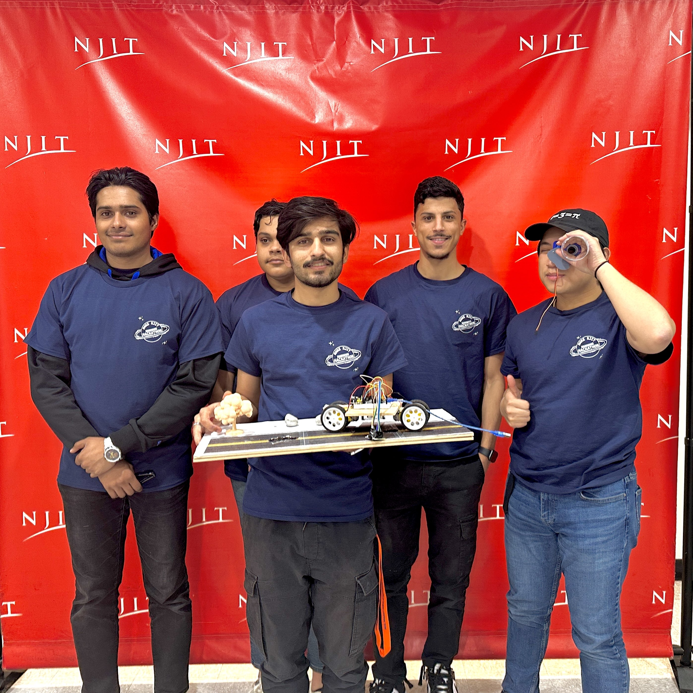
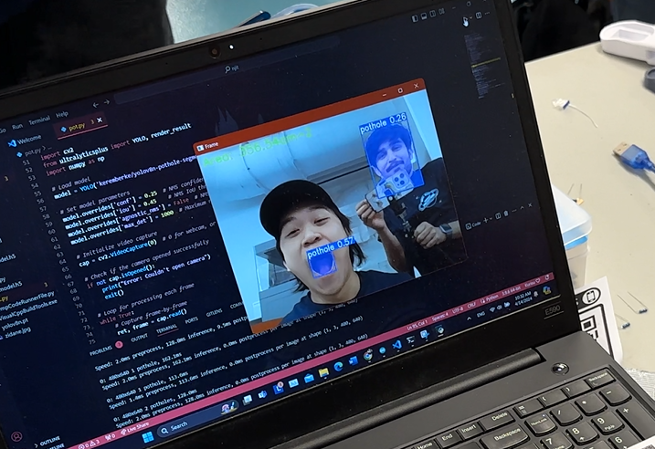
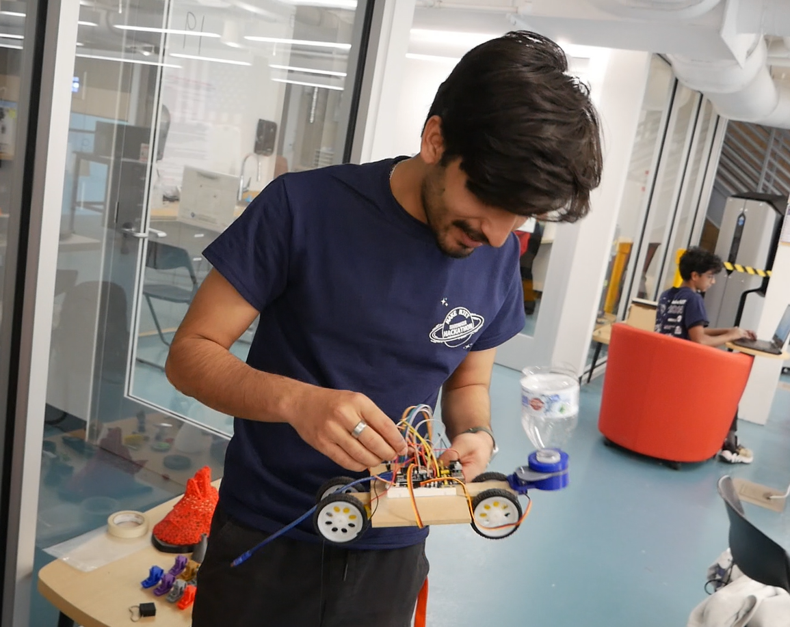

HackNJIT




> This was my first Hackathon, the hardware hackathon at NJIT. Here I joined a random team of 4 and decided to build a vehicle attachment to sense/measure/fill potholes.
> At this event, I was able to meet amazing people and peer into their thought processes as they made amazing creations within 24 hours.
> This was a most enjoyable experience, and I hope to find more in the near future.